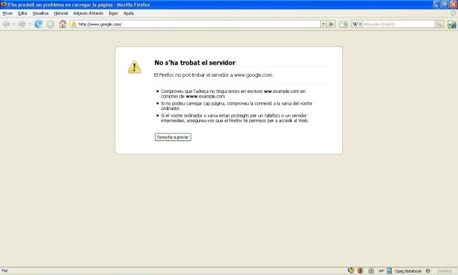
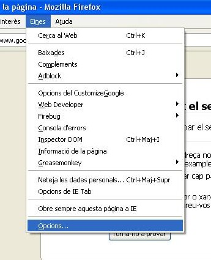
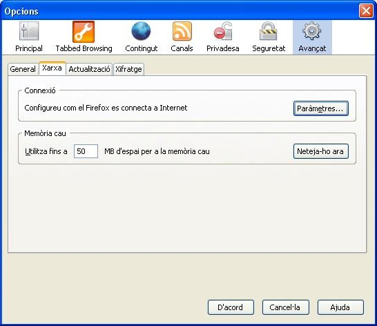
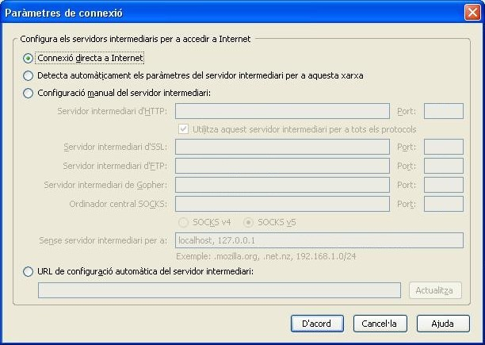
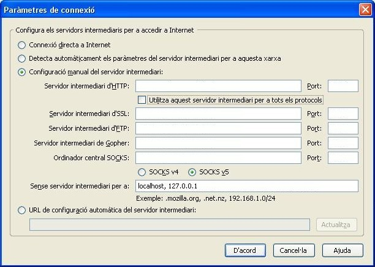
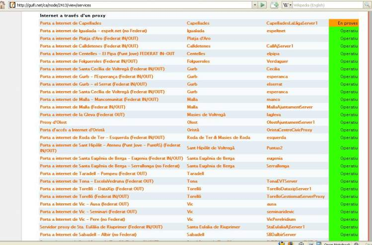
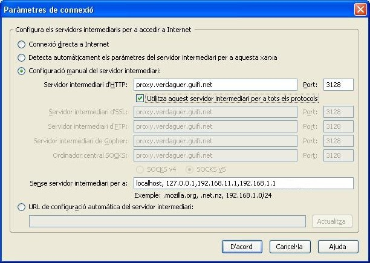

Procediments per al Mozilla Firefox
Obrim el Mozilla Firefox.

Cliquem a l'apartat del menú Eines >
Opcions

A la finestra que s'obra, cliquem a l'icona de Avançat i després
anem a la pestanya de Xarxa

Cliquem al butó de Paràmetres... el qual ens obrirà una nova
finestre

Marquem l'opció que té com a text "Configuració manual del servidor
intermediari" el qual activarà uns quadres de text.

Depenent la nostra ubicació, haurem d'omplir els següents quadres amb la
informació que trobareu a l'apartat Internet a través d'un proxy, que hi
ha a la següent web:

No us oblideu de marcar el quadre que posa "Utilitzar aquest servidor
intermediari per a tots els protocols" com es veu a la següent foto.

Un cop tinguem la informació escrita, anem clicant D'acord a les
diferent finestres que hem anat obrint. Si tot està bé, si escrivim una pàgina
qualsevol de Internet (p. ex. www.google.com) ens hauria d'apareixer un quadre
on ens demana un nom d'usuari i una contrassenya.
Els omplim amb l'usuari i contrassenya que ens han facilitat als fòrums de
Guifi.net (tipiciament, com a usuari "nom.cognom-delapersona" i de
contrassenya "nom-delapersona" ).
I ara, a navegar!!!.
Què hem vist
En aquest fragment de la guia hem après a:
- Demanar l'alta d'usuari per als proxys de la xarxa Guifi.net.
- Configurar el nostre navegador web per tal d'utilitzar els proxys de la
xarxa Guifi.net.